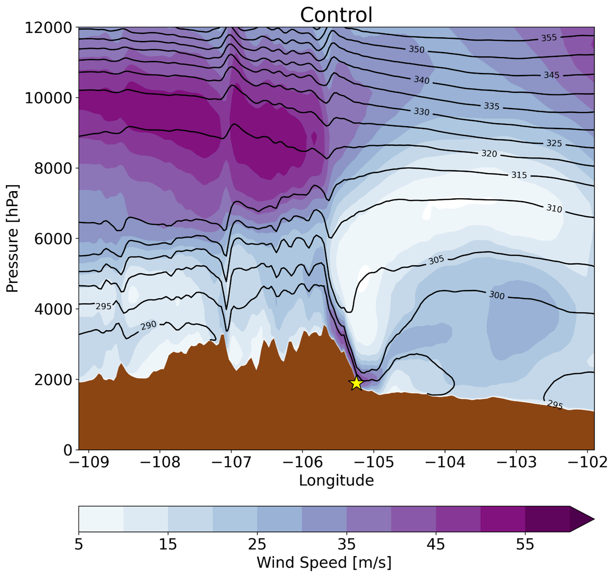

Extratropical Cyclones and Machine Learning A climatology of lee cyclones across the central United States, 1980–2021
 Downslope Windstorms Earth, wind and fire: Are Boulder’s extreme downslope winds changing? Downslope Wind Verification of the National Blend of Models Across the Northern Front Range of Colorado During the 2020/2021 Cool Season